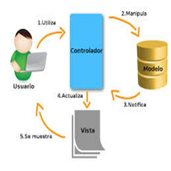
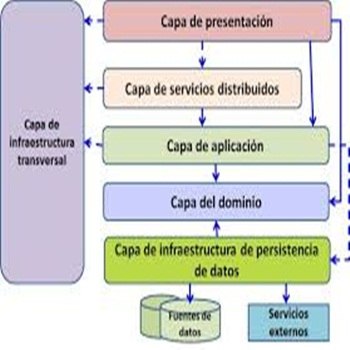

Modelo Vista Controlador:
divide una aplicación interactiva en 3 partes, como modelo — contiene la funcionalidad y los datos básicos vista : muestra la información al usuario (se puede definir más de una vista) controlador : maneja la entrada del usuario Esto se hace para separar las representaciones internas de información de las formas en que se presenta y acepta la información del usuario. Desacopla los componentes y permite la reutilización eficiente del código.
Modelo Cliente servidor:
Este patrón consiste en dos partes; un servidor y múltiples clientes . El componente del servidor proporcionará servicios a múltiples componentes del cliente. Los clientes solicitan servicios del servidor y el servidor proporciona servicios relevantes a esos clientes. Además, el servidor sigue escuchando las solicitudes de los clientes.
